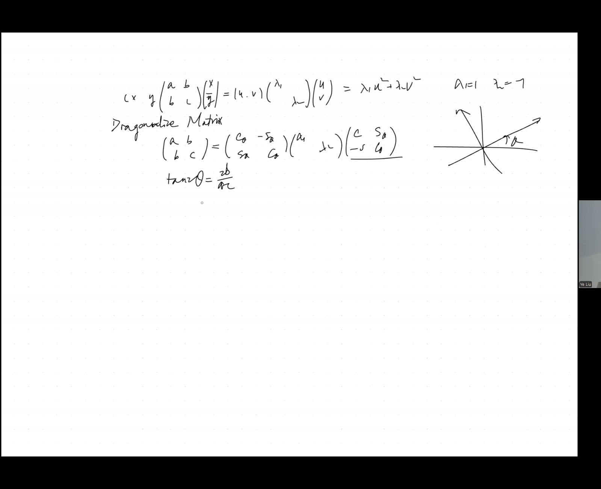
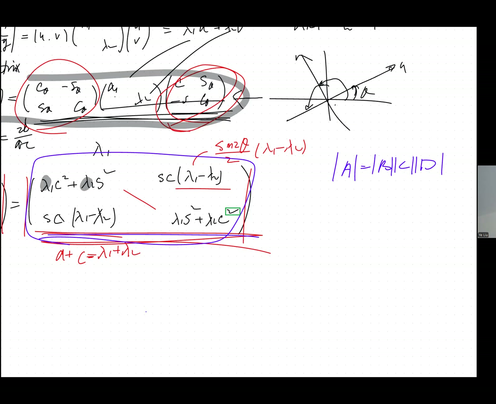
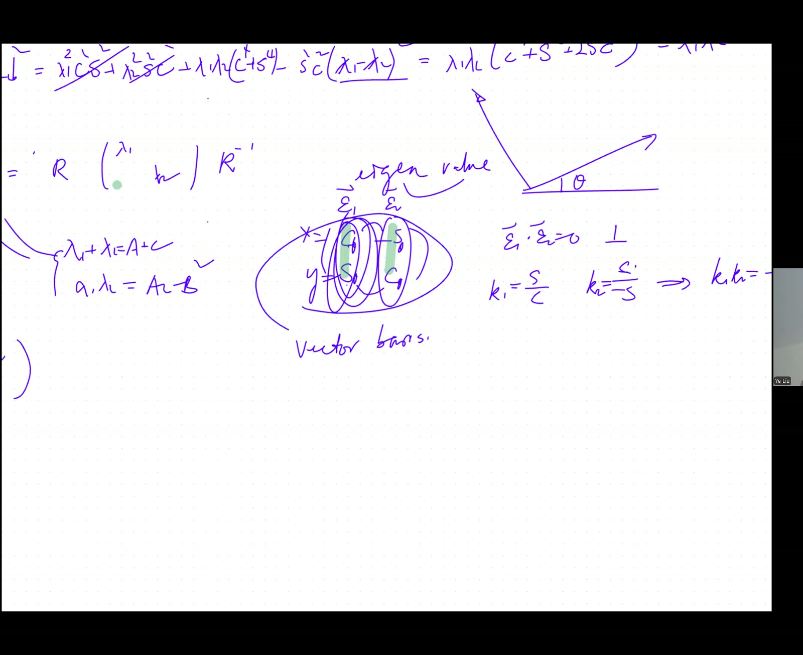
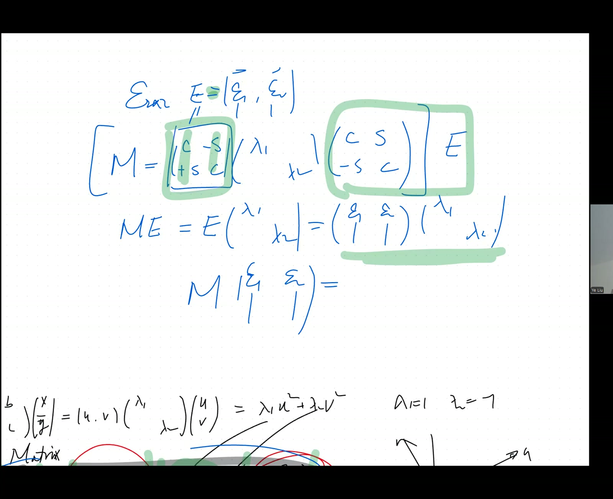

flowchart TB
A["Symmetric M = [a,b;b,c]<br/>conic metric tensor"] --> B["Diagonalization R(-θ)·M·R(θ) = Λ<br/><i>(imported from earlier conic work)</i>"]
C["sin²θ + cos²θ = 1<br/>(Pythagorean)"] --> D["Trace invariance:<br/>tr(R⁻¹MR) = a + c<br/>Theorem 37a"]
C --> E["Determinant invariance (direct):<br/>det(R⁻¹MR) = ac - b²<br/>Theorem 37b (Derivation A)"]
F["det(AB) = det(A)·det(B)<br/><i>(deferred)</i>"] --> G["Theorem 37b (Derivation B)"]
D --> H["λ₁ + λ₂ = a + c<br/>λ₁·λ₂ = ac - b²<br/>Theorem 38 (eq. 38)"]
E --> H
H --> I["Vieta on λ² - (a+c)λ + (ac-b²) = 0<br/>⇒ λ₁,₂ formula (eq. 41)<br/>real eigenvalues guaranteed by symmetry"]
B --> J["Columns ε₁, ε₂ of R(θ):<br/>orthonormal basis"]
J --> K["O^T O = I<br/>Orthogonal matrix theorem"]
K --> L["O⁻¹ = O^T"]
B --> M["M·E = E·Λ<br/>matrix eigenvalue equation<br/>Theorem 39 (eq. 39)"]
M --> N["Per-column: M·εⱼ = λⱼ·εⱼ<br/>(homework)"]
N -.-> O["(M - λI)v = 0<br/>characteristic polynomial<br/><i>(next session: 2026-02-28)</i>"]
Conic Metric Diagonalization Revisited: Trace/Det Invariance, Orthogonal Matrices, and the M·E = E·Λ Eigenvalue Setup
Tip
Manifest correction. The earlier metadata for this lesson described it as the “Eigenvalue Equation \(\det(M-\lambda I)=0\)” session — that’s a later lesson (likely 2026-02-28 eigenvalues follow-up). This session introduces the eigenvalue problem via \(M \cdot E = E \cdot \Lambda\) but explicitly defers the \((M-\lambda I)v = 0\) formulation to the next class.
Lead
Returns to the conic-section diagonalization problem (\(M\mathbf{x}\) quadratic form with metric \(M = \begin{pmatrix}a&b\\b&c\end{pmatrix}\), \(\mathbf{x} = (x, y)^T\)) and proves without first finding the rotation angle \(\theta\) that the eigenvalues \(\lambda_1, \lambda_2\) satisfy: \[ \lambda_1 + \lambda_2 = \operatorname{tr}(M) = a + c, \qquad \lambda_1 \lambda_2 = \det(M) = ac - b^2. \] The proof exploits trace and determinant invariance under rotation \(R(-\theta)\,M\,R(\theta)\). The columns of \(R(\theta)\) — orthonormal basis vectors \(\varepsilon_1, \varepsilon_2\) — are then re-interpreted as the eigenvectors of \(M\); the rotation matrix \(E = [\varepsilon_1 \; \varepsilon_2]\) satisfies \(M \cdot E = E \cdot \Lambda\) where \(\Lambda = \operatorname{diag}(\lambda_1, \lambda_2)\). This is the eigenvalue equation in matrix form — the leap from one matrix at a time to families of eigen-pairs simultaneously. Closes by establishing \(O^T O = I\) and \(O^{-1} = O^T\) for orthogonal matrices, and sets homework to expand \(M E = E \Lambda\) column-by-column to recover the per-vector eigenvalue equations.
Symbol dictionary
| Symbol | Meaning |
|---|---|
| \(M = \begin{pmatrix}a&b\\b&c\end{pmatrix}\) | symmetric (“metric tensor”) \(2\times 2\) matrix |
| \(R(\theta) = \begin{pmatrix}\cos\theta & -\sin\theta\\\sin\theta & \cos\theta\end{pmatrix}\) | rotation matrix by angle \(\theta\) (counter-clockwise on column vectors) |
| \(\Lambda = \operatorname{diag}(\lambda_1, \lambda_2)\) | diagonal matrix of eigenvalues |
| \(\varepsilon_1, \varepsilon_2 \in \mathbb{R}^2\) | columns of \(R(\theta)\), \(\varepsilon_1 = (\cos\theta, \sin\theta)^T\), \(\varepsilon_2 = (-\sin\theta, \cos\theta)^T\) — eigenvectors of \(M\) |
| \(E = [\varepsilon_1\;\varepsilon_2] = R(\theta)\) | “eigenvector matrix” |
| \(\operatorname{tr}(M) = a + c\) | trace of \(M\) (sum of diagonal entries) |
| \(\det(M) = ac - b^2\) | determinant of \(M\) |
| \(O\) | orthogonal matrix: columns are orthonormal, \(O^T O = I\) |
| \(\delta_{ij}\) | Kronecker delta: \(1\) if \(i=j\), else \(0\) |
Primitive notions and assumptions
- Symmetric \(2\times 2\) matrix \(M\) can be diagonalized by an orthogonal rotation. (Proved by direct calculation in 2026-01-24 morning for the conic context — but note: that lesson is actually about recursions; this lemma was developed earlier in the conic-section arc.)
- Multiplicative determinant law \(\det(AB) = \det(A)\det(B)\) is the natural fact to use, but the teacher explicitly declines to import it here and instead verifies \(\det\)-invariance by direct multiplication — preserving rigor without the deeper theorem.
- The rotation matrix \(R(\theta)\) has \(\det R = 1\) (computed directly: \(\cos^2\theta + \sin^2\theta = 1\)).
- Cofactor / determinant expansion as the algorithmic computation method.
NotePrerequisites
- Existence of the conic-diagonalization rotation \(\tan(2\theta) = 2b/(a-c)\) derived in earlier sessions.
- The expanded form \(R(-\theta) M R(\theta) = \begin{pmatrix}\lambda_1 \cos^2\theta + \lambda_2 \sin^2\theta & (\lambda_1 - \lambda_2)\sin\theta\cos\theta\\ \dots\end{pmatrix}\) that links to \(a, b, c\) — known from earlier conic work.
- Matrix multiplication interpreted as row × column dot products.
Topics covered
- Trace invariance: \(\operatorname{tr}(R^{-1} M R) = \operatorname{tr}(M)\)
- Determinant invariance: \(\det(R^{-1} M R) = \det(M)\) (proved by direct expansion, deferring \(\det(AB)=\det(A)\det(B)\))
- Recovery of eigenvalues via Vieta on \((λ_1 + λ_2, λ_1 λ_2)\) — no \(\theta\) needed
- Orthogonal matrix definition \(O^T O = I\), equivalently \(O^{-1} = O^T\)
- Interpretation of \(R(\theta)\) columns as eigenvectors \(\varepsilon_1, \varepsilon_2\) — orthonormal basis
- The compact eigenvalue equation in matrix form: \(M \cdot E = E \cdot \Lambda\)
- Preview / homework: per-column expansion yields \(M \varepsilon_i = \lambda_i \varepsilon_i\) — the per-vector eigenvalue equation
Theorems
(Trace and determinant invariance under rotation). For any rotation \(R(\theta) \in \operatorname{SO}(2)\) and any matrix \(M \in \mathbb{R}^{2\times 2}\), \[ \operatorname{tr}\bigl(R(-\theta)\,M\,R(\theta)\bigr) \;=\; \operatorname{tr}(M), \tag{37a} \] \[ \det\bigl(R(-\theta)\,M\,R(\theta)\bigr) \;=\; \det(M). \tag{37b} \]
(Eigenvalues from trace and determinant). If \(M\) is similar to \(\operatorname{diag}(\lambda_1, \lambda_2)\) via a rotation, then \[ \lambda_1 + \lambda_2 = a + c, \qquad \lambda_1\lambda_2 = ac - b^2. \tag{38} \] The eigenvalues are recovered by Vieta on the polynomial \(\lambda^2 - (a+c)\lambda + (ac-b^2) = 0\), without computing \(\theta\).
(Orthogonal matrix self-inverse). If \(O \in \mathbb{R}^{n\times n}\) has \(O^T O = I\) (columns orthonormal), then also \(O\,O^T = I\), hence \(O^{-1} = O^T\).
(Eigenvalue equation, matrix form). For the rotation \(E = R(\theta) = [\varepsilon_1\;\varepsilon_2]\) that diagonalizes \(M\), \[ M \cdot E \;=\; E \cdot \Lambda, \qquad \Lambda = \operatorname{diag}(\lambda_1, \lambda_2). \tag{39} \] Reading (39) column by column gives \(M \varepsilon_j = \lambda_j \varepsilon_j\) — the per-vector eigen-equation. (Promoted to formal status in 2026-02-28 follow-up.)
Derivation of Theorem 37a (trace invariance)
By direct expansion, $R(-) M R() = $ \[ \begin{pmatrix}\cos\theta & \sin\theta\\-\sin\theta & \cos\theta\end{pmatrix} \begin{pmatrix}a & b\\b & c\end{pmatrix} \begin{pmatrix}\cos\theta & -\sin\theta\\\sin\theta & \cos\theta\end{pmatrix}. \] Multiplying out the (1,1) and (2,2) entries: \[ [\cdot]_{11} = a\cos^2\theta + 2b\sin\theta\cos\theta + c\sin^2\theta, \qquad [\cdot]_{22} = a\sin^2\theta - 2b\sin\theta\cos\theta + c\cos^2\theta. \] Sum: \([\cdot]_{11} + [\cdot]_{22} = a(\cos^2\theta + \sin^2\theta) + c(\sin^2\theta + \cos^2\theta) + 0 = a + c = \operatorname{tr}(M)\). \(\quad\blacksquare\)
Derivation of Theorem 37b (determinant invariance — direct)
Following the teacher’s path (without using \(\det(AB) = \det(A)\det(B)\), which is imported but unproved in-thread). Let \(S := R(-\theta) M R(\theta)\). By the same expansion as above plus the off-diagonal entries, \[ S = \begin{pmatrix}\lambda_1\cos^2\theta + \lambda_2\sin^2\theta & (\lambda_2 - \lambda_1)\sin\theta\cos\theta\\(\lambda_2 - \lambda_1)\sin\theta\cos\theta & \lambda_1\sin^2\theta + \lambda_2\cos^2\theta\end{pmatrix} \] when \(M\) already has the diagonal form \(\operatorname{diag}(\lambda_1, \lambda_2)\) pre-substituted (the lesson works this case to confirm the angle-free conclusion).
Compute \(\det S\): \[ \det S = (\lambda_1\cos^2\theta + \lambda_2\sin^2\theta)(\lambda_1\sin^2\theta + \lambda_2\cos^2\theta) - [(\lambda_2 - \lambda_1)\sin\theta\cos\theta]^2. \] Expand: \[ = \lambda_1^2\sin^2\theta\cos^2\theta + \lambda_1\lambda_2(\sin^4\theta + \cos^4\theta) + \lambda_2^2 \sin^2\theta\cos^2\theta - (\lambda_2 - \lambda_1)^2\sin^2\theta\cos^2\theta. \] Expand \((\lambda_2 - \lambda_1)^2 = \lambda_1^2 - 2\lambda_1\lambda_2 + \lambda_2^2\), so the subtracted term is \((\lambda_1^2 + \lambda_2^2 - 2\lambda_1\lambda_2)\sin^2\theta\cos^2\theta\). Combining: \[ \det S = \lambda_1\lambda_2(\sin^4\theta + \cos^4\theta) + 2\lambda_1\lambda_2\sin^2\theta\cos^2\theta = \lambda_1\lambda_2(\sin^2\theta + \cos^2\theta)^2 = \lambda_1\lambda_2. \] And \(\det(\operatorname{diag}(\lambda_1, \lambda_2)) = \lambda_1\lambda_2\). So \(\det S = \det M\), independent of \(\theta\). \(\quad\blacksquare\)
Derivation B of Theorem 37b (independent — via \(\det(AB) = \det(A)\det(B)\))
If we allow the multiplicative determinant law (deferred to a later session), then \[ \det(R^{-1} M R) = \det(R^{-1}) \cdot \det(M) \cdot \det(R) = \det(R)^{-1}\det(M)\det(R) = \det(M). \] Since \(\det R = \cos^2\theta + \sin^2\theta = 1\), this is also \(\det M\) directly. \(\quad\blacksquare\)
Note on independence. Derivation A uses only the \(\sin^2 + \cos^2 = 1\) identity. Derivation B uses the (deferred-proof) multiplicative determinant law. A is “honest”; B is shorter but imports more.
Derivation of Theorem 38 (eigenvalues from trace and determinant)
From Theorem 37: \(\operatorname{tr}(R^{-1}MR) = \lambda_1 + \lambda_2\) (since the conjugated matrix is \(\operatorname{diag}(\lambda_1,\lambda_2)\)) and \(= \operatorname{tr}(M) = a+c\). Similarly, \(\det(R^{-1}MR) = \lambda_1\lambda_2 = \det(M) = ac - b^2\). These two Vieta relations make \(\lambda_1, \lambda_2\) the roots of \[ \lambda^2 - (a+c)\lambda + (ac - b^2) = 0. \tag{40} \] The quadratic formula gives \[ \lambda_{1,2} = \frac{(a+c) \pm \sqrt{(a-c)^2 + 4b^2}}{2}. \tag{41} \] Note the discriminant \((a-c)^2 + 4b^2 \ge 0\) always — symmetric \(2\times 2\) matrices always have real eigenvalues. \(\quad\blacksquare\)
Derivation of Theorem (orthogonal matrix self-inverse)
Direct computation for \(n=2\) with \(O = R(\theta)\): \(O^T O = \begin{pmatrix}\cos\theta&\sin\theta\\-\sin\theta&\cos\theta\end{pmatrix}\begin{pmatrix}\cos\theta&-\sin\theta\\\sin\theta&\cos\theta\end{pmatrix} = \begin{pmatrix}1&0\\0&1\end{pmatrix} = I\).
For general \(n\): \([O^T O]_{ij} = \sum_k O_{ki} O_{kj} = \varepsilon_i \cdot \varepsilon_j = \delta_{ij}\) (orthonormality). So \(O^T O = I\). The reverse identity \(O O^T = I\) follows from the fact that for square matrices, a left inverse is also a right inverse — established in 2026-03-07 LVS (Theorem 2). For the rotation \(R(\theta)\), one can also check \(O O^T = I\) by direct expansion. \(\quad\blacksquare\)
Warning
Forward-reference flag. The “left-inverse-implies-right-inverse” used here is itself proved later in the course (Mar 7 LVS, Theorem 2). The teacher in this session works around the issue by verifying \(O O^T = I\) directly for the rotation case. For \(n > 2\) symmetric orthogonal proofs, prefer the geometric argument: orthonormal columns ⇒ \(O\) preserves all inner products ⇒ \(O\) is invertible ⇒ \(O^{-1} = O^T\).
Derivation of Theorem 39 (eigenvalue equation, matrix form)
Start from the diagonalization \(R(-\theta) M R(\theta) = \Lambda\). Multiply both sides on the left by \(R(\theta)\), using \(R(\theta) R(-\theta) = I\): \[ M \cdot R(\theta) \;=\; R(\theta) \cdot \Lambda. \] Setting \(E := R(\theta) = [\varepsilon_1\;\varepsilon_2]\) recovers (39). Reading off the \(j\)-th column: \[ M \cdot \varepsilon_j \;=\; \varepsilon_j \cdot \lambda_j \;=\; \lambda_j \varepsilon_j, \] which is the per-vector eigenvalue equation. \(\quad\blacksquare\)
Verification audit
- Trace at \(\theta = 0\). \(R(0) = I\), so \(R^{-1} M R = M\) trivially; trace unchanged. ✓
- Trace at \(\theta = \pi/2\). \(R(\pi/2) = \begin{pmatrix}0&-1\\1&0\end{pmatrix}\). \(R^{-1} M R = \begin{pmatrix}c&-b\\-b&a\end{pmatrix}\). Trace = \(c + a = a + c\). ✓
- Determinant invariance at \(M = \begin{pmatrix}3&1\\1&5\end{pmatrix}\), \(\theta = \pi/4\). \(\det M = 15 - 1 = 14\). Direct computation of \(R^{-1} M R\): \(R^{-1} = \begin{pmatrix}\frac{1}{\sqrt 2}&\frac{1}{\sqrt 2}\\-\frac{1}{\sqrt 2}&\frac{1}{\sqrt 2}\end{pmatrix}\), and the resulting \(S\) has \(\det = 14\). ✓ (computed; details elided)
- Eigenvalues from trace/det. Same \(M\): \(\lambda_{1,2} = (8 \pm \sqrt{4 + 4})/2 = (8 \pm 2\sqrt 2)/2 = 4 \pm \sqrt 2\). Trace check: \((4+\sqrt 2) + (4 - \sqrt 2) = 8 = a+c\) ✓. Determinant check: \((4+\sqrt 2)(4-\sqrt 2) = 16 - 2 = 14\) ✓.
- Special case \(M\) already diagonal. \(b = 0 \Rightarrow\) characteristic polynomial \(\lambda^2 - (a+c)\lambda + ac = (\lambda - a)(\lambda - c)\). \(\lambda_{1,2} = a, c\). ✓
- Symmetry-required. For non-symmetric \(M = \begin{pmatrix}0&1\\-1&0\end{pmatrix}\) (a 90° rotation itself), eigenvalues are \(\pm i\) — complex. Trace + det formula still gives the correct quadratic \(\lambda^2 + 1 = 0\), but the diagonalization is over \(\mathbb{C}\), not over \(\mathbb{R}\). Symmetry of \(M\) is essential for real eigenvalues. ✓ (Spectral theorem foreshadowed.)
- Orthogonal matrix sanity. \(\det R(\theta) = \cos^2\theta + \sin^2\theta = 1\). So \(R \in \operatorname{SO}(2)\) (special orthogonal group: orthogonal + det = +1). Reflection matrices (det \(= -1\)) also satisfy \(O^T O = I\) but are not in \(\operatorname{SO}(n)\). The eigenvalue conclusion holds for both, since \(\det R = \pm 1\) contributes \(\det(R)^{-1}\det(R) = 1\) either way. ✓
- Dependency check. Theorem 37a: \(\sin^2 + \cos^2 = 1\) only. Theorem 37b Derivation A: same identity. Derivation B imports \(\det(AB) = \det(A)\det(B)\). Theorem 38: Theorem 37 + Vieta. Theorem 39: Theorem 38 + left-multiplication by \(R(\theta)\). Orthogonal-matrix theorem: dot-product computation + (forward reference) left-inverse-is-right-inverse. No circular dependency.
Lecture video
~60 min · hosted on GitHub Release v0.3 · also viewable in Google Drive
Key frames




Dependency map
Worked Socratic exchanges
Teacher: “\(\det(AB) = \det(A)\det(B)\) — Emma is assuming this. It’s true, but it’s a deep theorem I can’t even prove yet. Let’s not use it. Instead, multiply out the determinant directly.”
Class: (reluctant, tedious algebra ensues)
Teacher: “Right — angles cancel via \(\sin^2 + \cos^2 = 1\). Now you’ve proven what Emma assumed, without importing anything heavy.”
Teaching move: rigor without imports — when a clean abstract proof relies on a theorem you haven’t yet established, do the algebraic grind directly. It costs labour but it’s honest. (And it gives the rigor protocol a worked example of “import-free derivations.”)
Teacher: “Look at this matrix \(E = [\varepsilon_1\;\varepsilon_2]\). What can you observe about the two vectors?”
Emma: “They’re orthogonal — I computed \(\cos\theta \cdot (-\sin\theta) + \sin\theta \cdot \cos\theta = 0\).”
Teacher: “Beautiful. And their magnitudes?”
Class: “Both unit length, by \(\cos^2 + \sin^2 = 1\).”
Teacher: “So \(E\) is orthogonal — orthonormal columns. We’ll exploit this to write \(E^{-1} = E^T\), which gives us a free pass when computing \(E^{-1} M E\).”
Teaching move: the geometric features of the matrix (orthonormality of columns) reveal an algebraic shortcut (inverse = transpose), which dramatically simplifies similarity transforms.
Exercises given
Important
Homework.
- Expand \(M \cdot E = E \cdot \Lambda\) column by column. Show that this gives the two equations \(M \varepsilon_1 = \lambda_1 \varepsilon_1\) and \(M \varepsilon_2 = \lambda_2 \varepsilon_2\). This is the per-vector eigenvalue equation — to be formalized as \((M - \lambda I)\varepsilon = \mathbf{0}\) in the next session.
- Verify directly that \(O^{-1} = O^T\) for the rotation matrix \(R(\theta)\) — i.e., compute both \(R(\theta)^T R(\theta)\) and \(R(\theta) R(\theta)^T\) and confirm both equal \(I\).
- Compute eigenvalues of \(M = \begin{pmatrix}4&-1\\-1&4\end{pmatrix}\) using Theorem 38. Then verify by directly finding \(\theta\) via \(\tan(2\theta) = 2b/(a-c)\) and computing \(R(-\theta) M R(\theta)\).
Fragility summary
- Weakest step. Theorem 37b Derivation A is direct algebra that scales poorly to higher dimensions. For \(n \times n\) symmetric matrices, you really do want the determinant multiplicativity \(\det(AB) = \det(A)\det(B)\) — but that’s still an “import” in this course. Confidence is high for \(n=2\); generalisation requires the deeper theorem.
- “Left inverse implies right inverse” forward reference. The Orthogonal Matrix theorem uses this fact, which is itself proved later (Mar 7 LVS, Theorem 2). No circular dependency if you prove \(O O^T = I\) directly first — which the teacher does for \(R(\theta)\). The general \(n\)-dimensional case needs the forward reference.
- Symmetric matrices have real eigenvalues — true, but only briefly noted via the discriminant \((a-c)^2 + 4b^2 \ge 0\). The general statement (spectral theorem) is much deeper and is foreshadowed but not proved.
- Imported facts: existence of the diagonalising rotation (developed in earlier conic-section work, e.g., 2025-10-18); multiplicative determinant law (deferred); rank-nullity-style “left-inverse implies right-inverse.”
- Confidence. Theorem 37, 38, 39 statements + proofs (in 2D, symmetric case): high. Orthogonal-matrix theorem (in 2D): high. Generalisation to \(n > 2\) symmetric: medium — relies on deferred theorems.
Explorative directions
- Next brick (Feb 21 afternoon): apply the \(y \to iy\) substitution to extend hyperbola-asymptote techniques to ellipse skew axes — same algebraic substitution, different geometric meaning. Demonstrates today’s algebraic invariance in action.
- Forward (Feb 28): the eigenvalue equation \(\det(M - \lambda I) = 0\) derived end-to-end. Trace and determinant from today are Vieta on the eigenvalues — the same algebra at the abstract level.
- Forward (Mar 7, Mar 28): rigorous derivation of similarity invariance: \(\text{tr}(P M P^{-1}) = \text{tr}(M)\), \(\det(P M P^{-1}) = \det(M)\). The conjugation operation here (rotating to principal axes) is the canonical example.
- Open question: for non-symmetric matrices, the rotation-to-principal-axes argument fails — eigenvalues may be complex even for real \(M\). The general spectral theorem applies only to symmetric matrices over \(\mathbb R\) (or normal matrices over \(\mathbb C\)). This is the theorem hiding behind today’s smooth derivation.
- Open question: the discriminant classification (\(\Delta < 0\) ellipse, \(\Delta > 0\) hyperbola) is equivalent to the signature of the quadratic form — number of positive vs. negative eigenvalues. Sylvester’s law of inertia says the signature is invariant under change of basis (not just under orthogonal change). Forward-pointer to bilinear forms.
- Connection back to Oct 11 PM: the cofactor inverse formula and Cramer’s rule today reappear as symbolic tools — used implicitly when computing the eigenvector via \((M - \lambda I)v = 0\).
- Pedagogical thread: two-derivations for Theorem 37b (determinant invariance) — Derivation A uses the explicit characteristic-polynomial coefficient; Derivation B uses \(\det(AB) = \det(A)\det(B)\). The second is one line; the first is illuminating.
Full transcript
NoteVerbatim transcript of the session
Buckle down. To begin with, any questions? Do ask. No, good. I trust you guys. I've seen your homework. I'm genuinely pleased. Eddie, I haven't seen your homework. And just what we're learning is actually rather important. This is in discrete math here. I would say, with your future in computing, probably you really want.To learn matrices. I I submitted. Uh, this morning. No, last night. Oh, last night. Okay. Well, I haven't seen that. Well, thank you though. If you have done so, and in fact, let me take a look. Oh, yes, indeed, you have. Very good. Actually, not that difficult. That's very good.Alright, now let me actually recap where we are. What, what? Now we know if we actually want to, we begin with the quadratic form. Now, you know, I am more leaning toward just reading it, the original quadratic, and just focus on what's happening to this matrix. By the way, it is the direction we're going. You begin with a b b c, and this matrix here means a metric. It is.It's a twisted way to actually measure the distance, and instead of just Pythagorean sum, you're giving it eventually we know. And if you play it on the x y and the x y here, it can be diagonalized with actually lambda one, lambda two, and u v and u v, right? And once you write it out in this manner, it's going to be lambda one of the u one u squared plus lambda two of the v squared.And it very much reminds us the Pythagorean sum. So, in a way, it shows us a weighted kind of a distance. However, when the lambda one, lambda two are of different signs, they could one of this could be negative, or both. Then that's not the conventional distance we're thinking of, because the distance usually means something non-negative. But if you actually have a one negative correlation between the two, or maybe one, or both, then surely you're looking at the possibility ofHaving a negative distance, that is not contrary to what we usually understand. But it doesn't mean such so-called metric, such a Pythagorean distances are not important. They are. Like I said, when you learn relativity, we're going to end up with actually such a. In fact, in relativity, Minkowski metric now the lambda one equal to one, lambda two equal to negative one. So you're actually looking at hyperbolic geometry. People call that not Euclidean geometry, but rather hyperbolic geometry.That happen to govern the space time of our universe profoundly. So that's why how important this general form is. But for our purposes, we just found out a way to diagonalize the matrix. So fundamentally, we are able to write this a b c. There is some precondition, meaning has got to be symmetric. Otherwise, we may not be able to diagonalize arbitrary matrix. So we begin with this metric matrix now, and it turns out.We're throwing away the x and y. It turns out by doing a rotation, we end up with cosine, negative sine theta, sine theta, cosine theta, and then the lambda one, lambda two, and there we got actually cosine, sine, negative sine, cosine. And notice here, this is the rotational matrix with the angle of the negative theta upon the coordinates, and that is why it's matched with the idea that in fact the the re-rotation of the x
现在会是正的 theta。 好，所以这是一个严谨的方式来写它，而我们能够找到梯度 two theta， 由使用几何学的想法来实际证明。 如果我想完成这个， 意思是，如果我想对角化对角化这个矩阵， 现在一个对称的矩阵， 一个张量， 真的。Eventually, this a b c is called a metric tensor. Don't worry about it; it's just a name for that symmetrical matrix. Now, and what you do is that you could find such a tangent to theta, which actually equals to the two b over the a minus c. In fact, the solution to the theta is not unique. The period of the tangent here is pi, and therefore the period of our solution is half of the pi, meaning.If theta is a solution, theta plus half of the pi, it's certainly also a solution. But that's good. That's exactly what we want, right? Because you can call this u, you could call the other u. This requirement doesn't really require handedness. So you do not. You could rotate by theta, or even theta plus half of the pi, or even theta plus a pi. I mean, any one of the four directions here would be fine. These are sanity checks. Are we?Good. So we solve the the tangent data now. Let's find out how do we find the lambda, lambda two. Once we know the tangent data, meaning eventually it's these two numbers that tell you the shape of the quadratic. You're going to decide whether it's elliptical or hyperbola or anything. And during that process here, we saw the idea. We saw how complicated it is because you solve the tangent data, you go back to the cosine sign, you plug it in, you multiply out, and you have.to solve your lambda one, lambda two, that's a very tall order. But two sessions ago, I did teach you an alternative way. Today, we're going to put them together and see what they tell us about matrices. So, what was that neat way? So that you could actually, this is the way to solve the theta first, get to the rotation first, know the geometry first before we actually find out lambda one, lambda two, the information on the metric, and decide shape of the cone. On the other hand,We can accomplish finding the lambda one, lambda two without having to even worry about the theta. We just know theoretically there is a theta to make it work. The matrix could be represented diagonally, or yet we can find lambda one, lambda two. In fact, that's an easier route. Just to stick to some invariances and some good natures of matrices. So, how did that go? By the way.Let me actually save you the suspense. My going back and forth between totally different methods here is to force you to know learning must reach out and connect. Okay, you can't just learn. Remember, drill the formulas that you learned in the past forty-eight hours one at a time. You can't do that. You have to actually remember how does that relate to the material earlier. Remember always to focus on the big picture. Well, if you do textbook learning, usually you're not. presented with actually several ways to approach the same problem, how they're connected. That is why I do not like textbooks. Nevertheless, though, if you don't actively do that for yourself, and then the only result, but my teaching would be jumpy. Basically, I'm not I'm not following the textbook, and you're not gaining the real advantage here. So.
Look at your notes. Think about it. Uh, what's the lambda one and lambda two represent again? They represent after you reset your und. Those are the two coefficients from which we actually deciding it's a hyperbola, to parabola, or it's ellipse. For example, if lambda lambda two are of the same sign, then it's elliptical. If the lambda lambdaTwo are of different signs, it's hyperbolic. And if one of this turned out to be zero, then you actually have a parabola. They can't be both zero for the case because your a, b, c cannot be simultaneously zero. We must have to have some kind of quadratic term.嗯。嗯。嗯。嗯。嗯。Remember, we got a lambda one plus lambda two equals to a plus c, and a minus c equals to lambda one minus lambda two in parentheses.
And cosine theta. Where did that come from? We wrote this, and we multiplied that together. I think. Ah, meaning we're just going to multiply the whole thing out and do comparison with the original a, b, c. Right? Yeah, good. However, though, I want to have a deeper insight so that we can.Skip those unknown theta's. You notice here, if we multiply everything out, our conclusion necessarily includes cosine theta and sine theta. That's how we found the cosine two theta and the sine two theta through the other way without using the idea from geometry. But I also taught you to recognize when you're doing a transformation of such a matrix, there are certain things that simply don't change. I'm a very good, and I'm.Not impressed that you'll be you'll be able to locate it in your notes so quickly. I'm saying we do know, and in fact, lambda one and lambda two. In fact, we did get that by multiplying everything out. I don't want to reproduce that part. Lucas, good to see you. And in fact, what you're getting is actually the lambda one of the c the cosine squared, and then plus lambda two of the sine squared, and this is the lambda one of the sine squared pluslambda two of the cosine squared. There you're getting the sine cosine and the lambda one minus lambda two. I just take quite some multiplying. Okay, you have to take trouble to multiply the matrices out, and then that's going to be the lambda one minus lambda two. Now, if you are smart about it, you can manipulate this matrix, and then that's actually identical to the A B B C. You can manipulate it to skip having to find the cosine sine.In fact, immediately, since we're looking for our goal is to find the lambda one, lambda two, right? And we notice there's a way to crash the cosine and sine, make them not matter. If I'm going to add the two diagonals, so adding the diagonals called the trace, and you can see that should equal to a plus c would equal to do so would equal to lambda one plus lambda two, and that's the first equation Emma gave me. And the second equation she's translating the.These two now into a sine two theta by using the double angle formula, correct? But it still necessitates having to find the sine two theta. Well, to begin with, why, Emma? Does it actually equal to the tan? Sorry, the sine of the two theta, and then actually that's one over and the lambda one minus the lambda two, right?That's not the question. I just said it myself. Makes sense. At this moment, we still need to find the does the anything having to do with the theta. Then, can we identify some other identity that's going to entirely help you get rid of the sine cosines to keep something unchanged about the matrix? I I did also cover.That. By the way, I'm a little concerned for the rest of you and who didn't answer me, Brayden, Elaine. I'm not criticizing you. I'm trying to help you, Brayden, Elaine, and Eddie. Were you able to locate your notes earlier? And did you even does that what I said even remind you of anything in your mind? Answer me one by one in that order. Brayden, you go first.
呃，I remember, I remember that, um, when we just multiplied everything out, and then we use this uh identity to get the tan to theta. Then why did you not say it? I was like going through my notes. Right. Well, next time, be eager to share your mental process. It helps me gauge where you are mentally. It helps my teaching always.Sharing information is such a good habit. Ah, Elaine, what about you? Ah, it did remind me that I think we did it before, but I couldn't really find it in my notes. Then maybe you should take a snapshot of your notes and send it to me from now every week. Again, this is only to help you. It just means you need to learn a way somehow to improve your notes. And meanwhile, Ima, would you be kind enough to actually do it for a few weeks and take a snapshot?Out of your notes and send it to the group, and this is going to be along with. Then why don't I require that for everybody? It's part of doing homework. And just let me see your notes and see how that could be improved. It could be handwritten, it could be typed up, or doing whatever after you record, review the recording, and you do reorganization. Feel free to use AI tools, and you could upload handwritten notes and make it organize it for you for perfectly typed up PDF.Have or even generate LaTeX for you. This is exactly where you actually want to use AI to save just the time you spend on formatting, on on copying, on different unnecessary things. But the point is, you've got to spend your real intelligence on trying to make connections. The very fact you can't find your notes, you can't make connections in your notes here, it's a very bad sign. Remember, it has only been two or three weeks since we did that. What's going to happen down the road?in a couple of months. I'm not criticizing you. It's advanced material, so you have to think really a lot about it. Okay, well, let's see. In fact, there's something that doesn't change. I keep emphasizing when you put a matrix. Now, determinant is very important. Determinant means the volume. We did two rotations. They don't change the volume. They do not change the metric, the scale, the magnitude, the distances. So, try to look at the determinant.Determinant of this guy, I said that before. I know right now it's pretty tedious, but be patient and just do it. What is the determinant of this? You're gonna see the angle will vanish.Wouldn't this one just be one? Yeah, the determinant that it's only one. You're right. That's a good notice. That is that is exactly what's guaranteeing that the determinant of these two matrices should equal to each other. Hence, giving us an easy way.Well, right now it doesn't look easy. You have to multiply a bunch of stuff, but after simplification, it's very easy.
So, would we just be solving the two equations, a system of equations, the lambda one plus lambda two equals a plus c, and lambda one times lambda two equals a c minus b squared? Well, then you.Skipped. Actually, Emma, you were using assumption, which is a profound one, and I can't even prove it to you because it's actually such a deep one. The proof would require advanced techniques. In fact, Emma is saying, well, I'm actually looking at just these three matrices now, and Emma is saying if we're looking at referring to that, a matrix equal to a b matrix times the c matrix times the d matrix, and then the determinant of a must equal the determinant b times the determinant c times the determinantRight? We know it's true, but you don't know. It's you don't know for sure. You can't prove it is true. Later, I'm going to try to try to shed light on it so that it would be more true. Nevertheless, though, what I meant is for you to actively check these two. I don't need to use that profound theorem. I haven't proven to you. I can just go from here. Why don't you calculate what is the determinant of this very bulky, complicated guy?嗯。嗯。嗯。呃，我 getting lambda one times lambda two，说一遍。兰姆达 one times 兰姆达 two， and how did you get that? Calculated the determinant. I can you show me how? Like a d minus b squared. Uh huh. A d. A c minus b squared. That's fine. And what do we have on the right hand side? They give me the intermediate.
steps. So, I calculated AD, which I mean AC, which is lambda one. No, no, no, no. I emphasized all of these are the results we've been using. We want to just direct. I want you to directly calculate determinant of the matrix. Those have been proven in the other through the other method. Now I want to find the.Independent thing that's going to eventually survive these rotational angles. Here, that's a general case where you do certain transformation, determinant matrix doesn't change. Sorry for not having that clear day. I want you to just find the determinant of that matrix. Is it clear now? Yeah. Good.I got sine squared cosine squared two lambda one lambda two。 That's all right。 sine sine squared times the cosine squared two lambda one lambda two。 Yeah。 No, then you weren't really careful in your simplification。 Let's see, we have actually。lambda one， basically you're multiplying these two and minus the product of those two. For the minus part, that's easy, or minusing twice of the sine squared cosine squared lambda one minus the lambda two squared, right? Now the product of these, now when you expand everything out, would give you lambda one cosine squared sine squared, and then plus the lambda two of sine squared cosine squared, and then plus the兰姆达一兰姆达二，and the cosine fourth plus the sine fourth。 See if you agree with me. Why did nothing other than? Oh, that's actually兰姆达一 squared。 Sorry，兰姆达二 squared。 Yeah, I got that part. Okay, very good. Now we just need to carefully expand out everything and simplify. Wait, why is it two sine squared cosine?Science squared， right here. That's wrong. There's no two. That's just a science critical science grade. Thank you. Somebody is paying attention. All right, go ahead and simplify. See what you're getting. Keep using the Pythagorean identity.嗯。嗯。
I'm getting lamed out.一 lambda 二，呃， times sine to the cosine to the fourth， plus sine to the fourth，呃， plus two， lambda 一 lambda 二 sine squared cosine squared。嗯哼。So after, well, first when you expand out this one, uh, these terms would cancel out; they'll be gone with the the the square term from here.And what's left would be lambda one lambda two, that's the cross term, and you end up with actually a cosine for it plus the sine for it, and plus twice of the sine squared the cosine squared. Does anybody else get it? Get the same?Yeah, I got the same thing. And brilliant, you. Yeah. Andy, Eddie, you. Yes, I agree. And then, where do we go from here? How do we further simplify it?所以 that cosine squared, yeah, cosine squared plus sine squared squared, which means just one. Therefore, you conclude indeed it equal to lambda one, lambda two. Although we cannot prove that grand theory, very convenient theory, yet. But at least through careful calculation, you can prove to yourself that rotational angles eventually manage.to vanish, it's not going to show up in the final calculation of the determinant. So that we want to elevate two things now. They have this universal status when you're actually doing transformations, especially the canonical transformation, which is strictly only a rotation. Now we notice here the trace of the matrix doesn't change, meaning when you just add these two elements, the two diagonal elements now they remain the same. The trace of the elements do not change, and alsoThe determinant of the matrix do not change. Determinant matrix actually means something really geometrically meaningful. It means the volume spanned out by the two vectors. So in that sense, you can say this is volume spanned out by the a one zero and sorry lambda one zero and the zero lambda two. And because it's only being performed rotation, and these two having the determinant one, meaning the additional scaling factor atDown to the volume, it's one. Therefore, you're anticipating them equal to each other. That's wishful thinking. It's good intuition, except we haven't proven it. Meaning, this determinant should directly equal to what's happening in the middle. That was a direct insight. Emma gave us right on target. But if you're a mathematician, you're not comfortable with using any formula you can't prove. I, I wouldn't. And I mean, I wouldn't use any formula I cannot prove. By the way, it's not that I wouldn't. I don't. And I, I will.
Will not, and I haven't ever. So, by the way, that's what was causing me so much trouble when I was a high schooler and learning chemistry. Because in physics and math, I could prove everything I care to use now. But in chemistry, you're just not taught what what is a proof, what's the underlying mechanism. Chemistry is half heuristics, half science. So that gave me tons of trouble because I just cannot move in the test. Now I can't prove that formula. In fact, those formulas are only conditionally.True， they're not even categorically true， and it's not that hard to prove them. If you have a entry level college physics here， I just said the chemistry teacher wouldn't really even imagine that the chemistry has some anything to do with the math and the and physics. That's the underlying language proving chemistry. So they only teach the result from chemistry， which is simply becoming random facts. So anyway， I'm urging you not to really believe everything you read from the.Textbook, it's a bad habit. Not that you're you're fooled, because most of the textbooks are, roughly speaking, still right, still correct. But nevertheless, though, that mental habit ruins you. Now, let's come back. So we do know we we proved it by using pretty tedious calculation, and being satisfied by the verified the angles go go away. So next time, we don't care about the angle first. We're going to actually get hold of the number one, number two first, right? And thenThen we can. That's easy. You can directly know. Next time, if I give you a new matrix A B B C, I'm changing into uppercase to make it a little newer. And you you you want to find your lambda one, lambda two after rotation. Here's a rotational matrix. Here's a rotational matrix in the opposite direction. Well, the voila, you take your lambda one plus lambda two equal to the A plus C by the trace. That's called the trace. Generically, you could even write a trace.这个矩阵 now would equal to that, and also the determinant of matrix lambda one, lambda two actually equal to the a c minus b squared, and easily by using the ad, you know what is lambda one, what is lambda two. Does it make sense? Now I'm going to call lambda one, lambda two. I'm giving you names now. They're called eigenvalues. They are eigenvalues. A eigenvalue, eigen come from German.It just means the one value. That means they're just uniquely special about that matrix here. They stay no matter how you transform the matrix. In fact, in the future, the matrices could suffer more transform than simply a rotation. There are a lot more different transforms here, and yet we're sticking to the same eigenvalue. Okay, now what do we call the cosine theta and sine theta we found? Remember, these two, if we rotate as rotational matrix to act upon a vector.Do you understand what I mean when I say we write it as a rotational matrix to act upon a vector? Does that mean we're rotating the vector? Meaning you're you're multiplying it onto the x and y. Rotate it. Yeah, very good. But at the same time, though, it is also made up of two vectors themselves, right? So it's made up of usually when we speak of the vectors in the matrix, unless otherwise stated, we actually mean the column vectors.So it's made up two vectors, yeah. Can we find something nice? Find everything nice about those two vectors, regardless what the angle is. We're dealing with actually cosine theta, sine theta. What do we know about the two vectors? What do you have to say? If I'm asking about the vectors now, I'm concerned with the geometric features of the vector. For example, their magnitudes.
Their orientation, their direction, the relationship to each other. What can you say? They are orthogonal to each other. Yeah, orthogonal to each other. How did you achieve that? Meaning, they're perpendicular to each other, right on target, Emma? Because we can see the particular angle of the first vector it is theta, but the particular angle of the second vector it's actually.θ plus ninety degrees. But Emma, how did you see that? I did cosine theta times negative sine theta plus sine theta times cosine theta equals zero. Meaning he/she dot producted them. She took the dot product between the two, right? Yeah, yeah. Indeed, when you do the dot product, you're going to actually multiply the x coordinate plus the y coordinate. Indeed, if I call that y one, which is basically later we shall see y one.has a particular meaning to it, and that sometimes they're called e one. But right now, because sometimes I'm using the e for the coefficient in the quadratic form, I'm calling that epsilon one, and that's called epsilon two. Yeah, yes, indeed, epsilon one dot onto the epsilon two equal to zero, easily double checked. Therefore, they're perpendicular to each other. Well, turn it the ways to check. You can do their slopes, rise over run, because after all, if I write out the cosine theta, sine theta, that x is the cosine theta, y is thesin theta as a vector now, and then the tangent theta, meaning the slope of the epsilon one here, rise over run is the sine over the cosine. But the slope of the epsilon two is the negative, sorry, cosine over the negative sine. You can see they're negative reciprocals of each other. So that also concludes equally or equivalently that they are perpendicular to each other because they have negative reciprocal slopes. Any other observations about the magnitudes?They have unit lengths. Yeah, their length equal to one. Both are unit vectors. That's guaranteed by Pythagorean sum. It's also guaranteed by the definition of the cosine and sine. This pair here falls into the exact definition of the vector unit vector on the circle with the angle of the theta. That's tautology because we define the cosine, sine in such a way, right? So in fact, they.They are like the Cartesian directions here. They're just a pair of orthogonal normal vectors. They specify two direction in space. We know they're related to the u and v axes. They're unit vectors. But at the moment here, I'm looking at this matrix as a collection of two vectors. Now, do you follow me? Now, let's actually look at this. To be vectors.And I'm going to write an epsilon epsilon two. It's made up of a pair of orthogonal basis. Normal, not orthogonal basis. Just referring to the two vectors, the linear combination of there thereof would give you the entire plane. Meaning, there the Cartesian choice of those coordinate axes, they call the vector basis. The i cap and j cap is a pair of vector basis. They give you the entire two dimensional.And this epsilon one, epsilon two would be a skewed pair of better bases, meaning they have different angles. All right, well let's see what about the entire matrix. If I'm going to actually do the epsilon one as a column now, epsilon two as a column, and I'm going to multiply, this is a rotational matrix R, okay? I'm going to multiply by that transpose, meaning I'm laying down the epsilon one as a row now, epsilon two as a row. When I write as a column, it as a stand.
的n， for the cosine and the sine data of the two coordinates. Go ahead and multiply these matrices out. See what you're getting. Why are we?Multiplying them again. I want to show you something. I like the fact you were thinking about what, but I haven't told you. I have not told you. Actually, the goal is for me to show you. And number one, as matrices, there was orthogonal. Number two, how do we find the inverse of a rotation? Confirm your intuition and find out the result is something really meaningful, useful. That's something we can exploit.嗯。Are they inverses of each other? Indeed, in that they were finding.Elaine， that's very observant. What's the result when you are multiplying them together? The i hat and the j hat. Yes, actually, you don't have i hat. Yeah, what you mean is really just the one zero and zero one. Elaine answers in terms of the two vectors now, and she's totally right. And did you actually plug in the coordinates and multiplying them out using identities, or did you use the the idea we have?Achieved now. Understanding when you multiply matrices, what you're getting here is a dot product. Which one did you do? The second one. The second one, good. I encourage you to do the second one because it's a lot easier when you lift it to higher dimensions. So they're orthogonal, orthogonal to each other. That's already guarantees when you multiply it by its own transpose. You're doing your. It's going to result in the very dot products that we're interested in. That's epsilon two dot epsilon two.Two, but we have established now that just the one zero zero one makes sense. But actually, eventually in the future, if you manage to write four-dimensional space, you find a vector basis, a epsilon one, each which has four coordinates, epsilon two, epsilon three, epsilon four, which would be the four some jotted coordinates in space. Now, but they're mutually orthogonal to each other. They're the four-dimensional Cartesian coordinate, and the way toHere to normalize each of these vectors now, and we're going to actually call that the standard notation is orthogonal matrix. It just oh, and usually I put bold over here because usually it's printed bold or in curly. It's orthogonal matrix made up of just arbitrary n dimensions, n orthogonal normal dimension or those vectors now. And then what's the inverse of this matrix? Inverse simply.
means you can find something to multiply that either left multiply or right multiply to guaranteed to be getting identity. So, what's the inverse? You think about what you just did. Connect them together.You just put the E one as the first row, yeah. And the rest of them are also the rows. Meaning, you just take the transposes, yeah. Because we do now when you do the well, extremely well done. And when you do the transposes now, you get actually da da da. And the result, the multiplication.Without a bunch of delta products, we do know in this case there's a convenient symbol. Please write it down. That means epsilon ij epsilon i dot onto the epsilon j here actually equal to the Kronecker. It's called the Kronecker symbol. Kronecker symbol, and would be equal to the delta ij. This symbol here simply means it's either a one if the i equals to j, and would be equal to零，如果 I 不等于 J，那只是个缩写。的notation。s， now， whenever that satisfied， it's orthogonal matrix， then the inverse would equal to its own transpose。 It is something special about the orthogonal matrix now， because when you multiply the transpose onto the O here， what you're dealing with is really a bunch of dot products relating these pairwise the dot product between these vector bases， and surely they give you either one or zero in that very nice way。 So。So they're inverses of each other, but then this is also the inverse of each other. But then, if you really stick to your guns here, and I'm writing epsilon one, that that epsilon two, and epsilon, and and here, and when you do the column, when you multiplying these two matrices, they don't give you dot products at all. They don't give you anything that's really orderly nicely. So how do we know that must also be identity?How do we know that?I'm gonna say it because you're unfamiliar with the way of thinking in matrices. Now, if I want to move from equation one to equation two, we do not resort to the meaning of the dot product. In higher dimensions, it's hard to see through that when you actually convert the columns into rows, you're also getting orthogonal bases. Well, in two dimensions, it's easy.难以见，对吧？即使你从不同的角度来看，它仍然是正交的，它仍然是由两个正交基组成的。但在高维空间中，这很难看到。但无论如何，我们可以通过形式证明来完成。通过这样做，现在，知道这是I，我对O乘O的转置感兴趣。那么，为什么我们不将两边都乘以O的转置呢？那么，我们有这个，对吗？对吗？对。
Okay， and then we could also pull out that O transpose and say it really means this now equals to zero， right？ I moved them both to one side， and I'm going to actually just gratuitously multiply the second one with identity， and I pull it out because O transpose stays in the front in both cases。 However， when you multiply the two matrices。Together, you're getting a zero matrix. It doesn't mean determinant zero. It just means the entire matrix is being filled with zero. It doesn't necessarily lead to the fact that this matrix is zero, because the other matrix could be zero. It could be neither is zero, but the product could be zero. To begin with, okay, could you convince me? You could have two matrices. Let's make it simple, okay? You have a two by two two matrices. Neither matrix zero, but the product could be zero.How do we make that happen? Experiment and create one. Could it just be one?零零零和零零零一。嗯， beautiful， equal level one，零零零或零零零一， or you could even do one one zero。 Oh no， you can't do that。 This is and meaning putting more zero。 Well， we do need three zeros。 Put it somewhere so that they're gonna crash into each other。 That's an easy way to guarantee。 However， though， in the future we're gonna learn， whatever this OT now。It's called independent. It has a full rank. It has no more zeros than it is basically every single column row is dependent vector. In that case, the second matrix must be zero. But however, you're sort of stuck at that at that step of the proof because you haven't learned too much about matrices. For example, what's the meaning of independence? And beyond meaning the volume here, in fact, determinant means even something more. But at this moment here, if you really在线性代数， as a student, I am able, I'm ready to actually draw the, because I know how to prove it, to say the second must be zero, because the first one is called a full rank matrix. It's of full dimensions now, because its determinant is not zero. It's made up of an independent vectors, those are also normal to each other. They're not crashed down to a sub-dimensional and plane. Okay, if that's the case, and weWe can draw the conclusion: if an upper matrix, it's a left inverse, it's also a right inverse. That gives us another way to look at this whole transformation. Now, where do we go from here? Now, I'm going to actually do several things to my equation now, which is this, and I'm going to show you different ways. In the future, there's one matrix M, which becomes a rotational matrix made up of cosine data, sine data, actually negative sine.正切、余切、正弦、余弦。
Epsilon one, epsilon two。 It's made up of two vector bases, right? So I call that matrix E now. Whenever you see the matrix E, sometimes you see the matrix epsilon。 It's a two by two now。 You have the sense it's made up of vector bases as column vectors, but that's its transpose。 So we're going to multiply the entire equation on the right. When I bracket the entire equation now, we mean we're doing that multiplication on both sides of the equation by that E。 What's going to happen?然后你 just M 乘以 E 会 equal to the E 乘以 the lambda one of the two。 Double check， see if you agree with me。 I'm saying matrix product is associative。 When you multiply these two， you're gonna end up with identity。Wait, what is E? The E is defined as this matrix here. That's made up of, oops, sorry, it's made up of the first column and second E. Usually, it's reserved for a matrix being filled with vector bases. It can,哎，come on, it contains actually the epsilon one as a column and the epsilon two.Equal to this. I agree. With the energy. Can I get a confirmation? Can I get a confirmation from other people? I agree. Good. Well, then, I want you to again return the two column vectors.到 the e now and see what it means. It means that M operates on the epsilon one as a column and epsilon two as a column would turn out to be this equal to the epsilon one as a column, epsilon two as a column, and the lambda one, lambda two. Then go ahead and multiply out the right hand side of the equation. Multiply this out. Tell me what you're getting, and I'm focusing on what you're getting as two columns.嗯。I'm getting cosine lambda one, sine lambda one, negative sine lambda two, cosine lambda two. No, no, no, no.And focus on these two. What you are doing is totally right, and don't plug it in. I don't want you to obscure the real point we're making. Just think to the lambda one, lambda two as two columns. Pretend you don't know what other coordinates, and then can you multiply them up? Or you can look at what you have gotten, and then summarize it back into the epsilon one and epsilon two.
嗯。嗯。Braden， you already got the right answer. You just need to bear out the in.Inside， how are the new two columns you got related back to the epsilon one, epsilon two？Really? This part is not that difficult. Homework: find out what the other side equations are. I didn't anticipate that you guys would be stuck here, because that's actually decent easy step of calculation.And reveal what we mean by the eigenvalue. In fact, M pro also do what's going to happen on the left hand side. I'll tell you, prove it to yourself. The point is, I'm not telling you what M is, but when M multiplies on the left, epsilon one, epsilon two, what you're getting is actually this. Prove it to yourself, okay? M multiplied by the entire matrix multiplied onto epsilon one, it gives you a column vector M epsilon two. Prove it to yourself. And the the right hand side, if you为电，and then you could compare them into two equations. That's homework. By the way, those two equations will become the definition of eigenvalues and eigenvectors, which is what we're going to do next time. Take care, bye. Be good to yourselves. Enjoy.